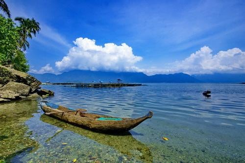
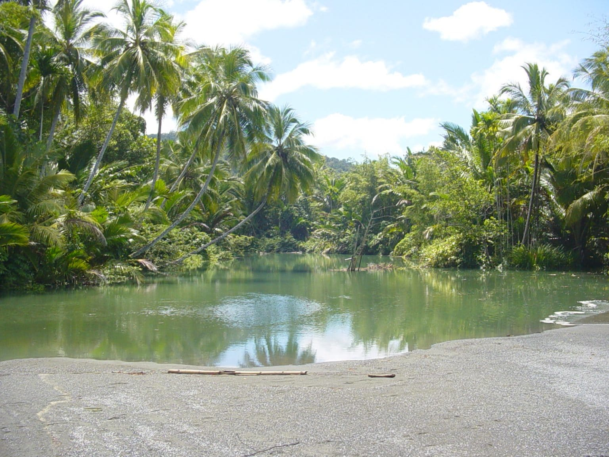
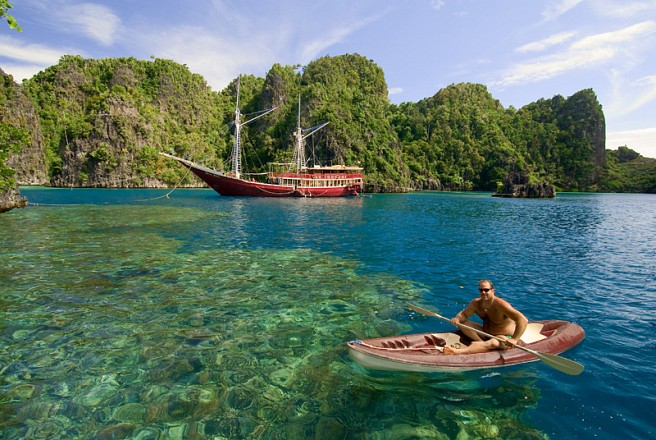
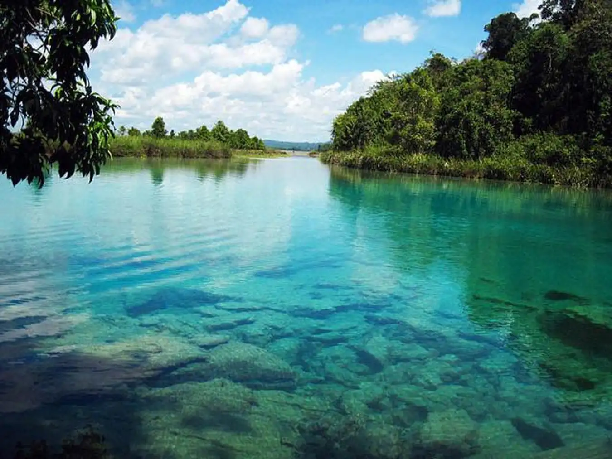
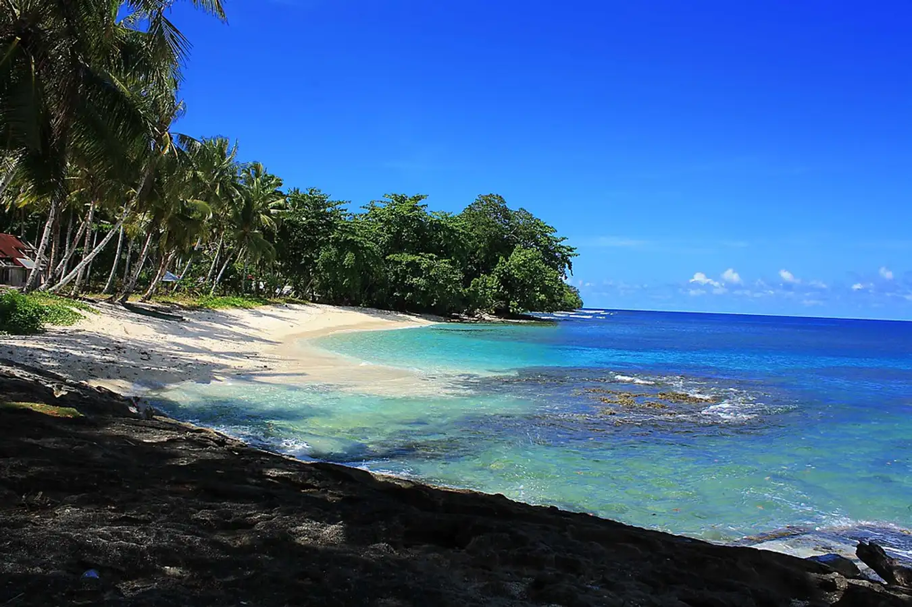

Danau Paniai
Danau Paniai adalah sebuah danau yang terletak di Kabupaten Paniai, Papua. Danau Paniai yang kesohor memiliki panorama alam yang rancak, alami, dan terawat dengan baik. Keindahan Danau Paniai diakui oleh utusan dari 157 negara ketika berlangsungnya Konferensi Danau Se-Dunia yang dihelat di India pada tanggal 30 November 2007. Pada awalnya, Danau Paniai[1] beserta Danau Tigi dan Danau Tage dinamakan Wisselmeren. Penamaan ini dinisbatkan kepada orang yang pertama kali menemukan ketiga danau cantik tersebut pada tahun 1938, yaitu seorang pilot berkebangsaan Belanda bernama Frits Julius Wissel. Pada saat itu, Frits Wissel terbang melintasi pegunungan Pulau Papua dan melihat tiga danau yang memiliki pemandangan yang indah. Karena terpesona dengan keindahannya, Wissel memutuskan untuk mendarat dan menikmati eksotisme ketiga danau tersebut dari dekat. Bahkan, pada masa kolonial Belanda, nama Wisselmeren lebih populer ketimbang Paniai. Wisselmeren berasal dari bahasa Belanda yang memiliki arti danau-danau Wissel.
Danau Paniai
Danau Paniai
Danau Sentani
Wilayah danau yang merupakan satu kesatuan dengan cagar alam Pegunungan Cycloops ini memiliki panorama alam yang indah dan sarat akan nilai budaya. Terdapat kurang lebih 34 sumber mata air yang mengalir dari Pegunungan Cycloop dan menjadi muara dari 14 sungai besar dan kecil yang ada. Beberapa pulau ini bahkan juga dimanfaatkan sebagai destinasi wisata Jayapura. Salah satu yang paling terkenal adalah Pulau Asei, pulau yang dipercaya sebagai bagian tubuh naga. Bahkan penduduk lokalnya percaya bahwa mereka merupakan keturunan leluhur yang menunggangi naga tersebut. Alkisah dahulu kala, beberapa penduduk purba dari wilayah Papua Nugini melakukan perjalanan panjang dengan mengendarai seekor naga. Mereka mencari wilayah baru untuk ditempati dan berencana menetap disana. Namun, malangnya naga yang mereka kendarai tidak mampu terbang lebih jauh dan akhirnya jatuh melesat ke sebuah danau besar. Naga itu akhirnya mati terendam dalam danau tersebut. Tetapi, tidak demikian dengan nasib beberapa penunggang naga tersebut. Mereka selamat dan terjebak di atas bagian tubuh naga yang menyembul keluar dari permukaan danau. Akhirnya, mereka terdampar di danau itu dan tinggal di tubuh naga yang mati. Menurut legenda, kepala naga itu menjadi pulau di sisi timur danau, bagian ekor menjadi pulau di sisi barat, dan tubuh menjadi pulau di bagian tengah dan bernama Pulau Asei. Danau tersebut adalah Danau Sentani dan hingga kini warga Sentani percaya asal-usul mereka bermula dari kisah orang-orang Papua Nugini yang menunggang naga.

Danau Sentani
Danau sentani
Pantai Amai
Pantai Amai adalah objek wisata alam yang cukup terkenal di Papua. Keadaan pantainya landai, berpasir putih dan dikelilingi pepohonan hijau yang menambah nilai keindahan di pantai ini. Pantai Amai juga dihiasi dengan muara sungai air tawar yang jernih di ujung pantai dan merupakan area pantai yang mempertemukan air tawar dan air laut. Berbagai aktifitas bisa kita lakukan di pantai ini, seperti berjemur, berenang, berperahu dan masih banyak yang lainnya. Jika kita merasa kelelahan, kita bisa beristirahat di pondok-pondok yang banyak berdiri disekitar pantai. Pantai Amai berada di pesisir utara Kabupaten Jayapura, terletak pada sebuah teluk di selatan Tanjung Tanahmerah. Posisinya tepat di balik Gunung Cyclop yang hijau berselimut hutan hujan tropis. Dari pusat kota Jayapura, pantai Amai berjarak sekitar 80 kilometer, bisa kita tempuh selama kurang lebih 2 jam perjalanan dengan menggunakan mobil.
Pantai Amai
Pantai Amai
Raja Ampat
Kabupaten Raja Ampat adalah salah satu kabupaten di provinsi Papua Barat, Indonesia. Ibukota kabupaten ini terletak di Waisai. Kabupaten ini memiliki 610 pulau, termasuk kepulauan Raja Ampat. Empat di antaranya, yakni Pulau Misool, Salawati, Batanta dan Waigeo, merupakan pulau-pulau besar. Dari seluruh pulau hanya 35 pulau yang berpenghuni sedangkan pulau lainnya tidak berpenghuni dan sebagian besar belum memiliki nama. Kabupaten ini memiliki total luas 67.379,60 km² dengan rincian luas daratan 7.559,60 km² dan luas lautan 59.820,00 km
Raja Ampat
Raja Ampat
Danau Framu
Danau Framu terkenal akan permukaan airnya yang tidak pernah tercemar. Warna air di destinasi wisata Papua Barat ini benar-benar biru dan jernih bak cermin dimana kamu bisa melihat refleksi dirimu sendiri di permukaan air! Bertempat di Framu, Ayamaru, Kabupaten Maybrat, kawasan Danau Framu dikelilingi pepohonan rimbun yang membuat area di tepian terasa menyejukkan. Menghabiskan banyak waktu di tempat wisata di Papua Barat ini bisa jadi pilihan untuk relaksasi, apalagi jika kamu bertandang di pagi hari. Selain Danau Framu, danau lain yang tidak kalah cantik di Papua Barat adalah Danau Kamakawalor yang berlokasi di Lobo, Kecamatan Kaimana, Kabupaten Kaimana. Wisata danau di Papua Barat merupakan salah satu danau yang memiliki fenomena alam di mana airnya bisa pasang surut dalam waktu 8 tahun.
Danau Framu
Danau Framu
Pantai Bakaro
Danau Framu terkenal akan permukaan airnya yang tidak pernah tercemar. Warna air di destinasi wisata Papua Barat ini benar-benar biru dan jernih bak cermin dimana kamu bisa melihat refleksi dirimu sendiri di permukaan air! Bertempat di Framu, Ayamaru, Kabupaten Maybrat, kawasan Danau Framu dikelilingi pepohonan rimbun yang membuat area di tepian terasa menyejukkan. Menghabiskan banyak waktu di tempat wisata di Papua Barat ini bisa jadi pilihan untuk relaksasi, apalagi jika kamu bertandang di pagi hari. Selain Danau Framu, danau lain yang tidak kalah cantik di Papua Barat adalah Danau Kamakawalor yang berlokasi di Lobo, Kecamatan Kaimana, Kabupaten Kaimana. Wisata danau di Papua Barat merupakan salah satu danau yang memiliki fenomena alam di mana airnya bisa pasang surut dalam waktu 8 tahun.
Pantai Bakaro
Pantai Bakaro
Wisata Alam Papua dan Papua Barat
Perona Wisata Alam Di beberapa tempat di Papua dan Papua Barat, Anda bisa temukan di sini!
Copy&right power by desaige Maria Asmuruf 20411024 & Grasella s.s Wasareak 19411069
2022